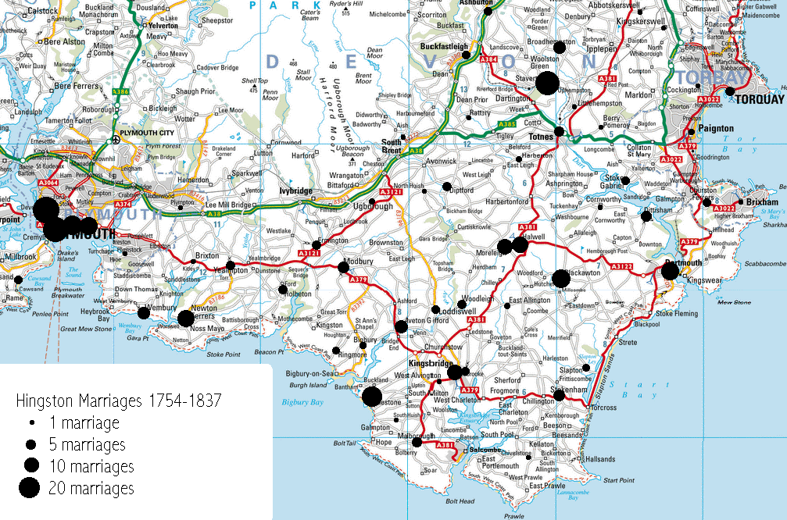

Distribution of Hingston Marriages 1754-1837 in South Hams area of Devon
The map below shows the distribution of Hingston marriages in the South Hams area of Devon, as listed in the DFHS marriage indices. It includes some, but not all, of the Quaker marriages in Tree HD. It does not mean that the Hingston who was married actually lived in the place shown but it does indicate where one might look.

2nd October 2004, Chris Burgoyne